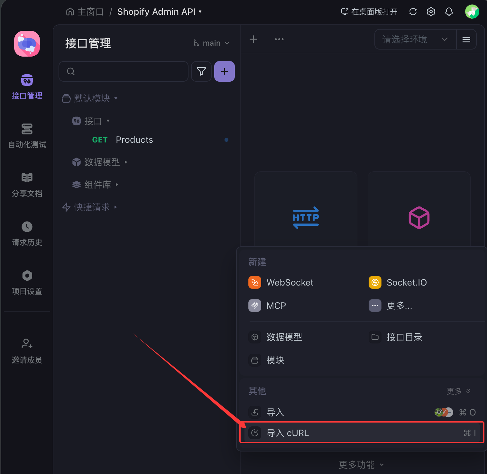

Embedded = false
从 Admin App 菜单进入会在新标签页打开
本工具通过 OAuth 2.0 授权码流程，为 Shopify App 生成 Admin API Access Token，供后端服务调用 GraphQL / REST
Admin API。
页面为纯静态部署（无后端、无 App Bridge）：OAuth 授权在浏览器完成；因 Shopify Token 接口存在 CORS 限制，换取
Token 须在本地终端或 Apifox 执行 CURL 命令。适用于内部工具、开发调试等需快速为指定店铺生成 Offline / Online
Token 的场景。
Redirect URL
1. 复制下方地址，在 Partner Dashboard 中将 App URL 与 Redirect URLs
配置为相同地址（HTTPS、无尾部斜杠），并 Release 版本。
OAuth 配置
2. 填写店铺域名、Client ID、Secret、Scopes（须与 App 配置的 Admin API scopes 一致）。
3. 选择 Token 类型并点击对应按钮，在 Shopify 授权页同意授权。Offline Token 为店铺级；Online
Token 绑定当前授权员工。
生成永久 Offline Token
生成非永久 Offline Token
生成非永久 Online Token
Access Token
4. 授权成功后回到本页，选择 Windows / macOS / Linux 对应的 CURL 命令，复制并在本地终端执行，或在
Apifox 中导入 cURL 发送请求；响应 JSON 中的 access_token 即为 Token。
Offline Token
Offline
授权码 code 仅可使用一次，且通常在数分钟内过期。授权成功后请立即复制命令到终端执行，或在 Apifox
平台的更多功能中导入 cURL 并发送请求。勿刷新或关闭本页。
当前：zsh / bash
Windows
macOS
Linux

Apifox：更多功能 → 导入 cURL → 发送请求
5. 获得 Token 后，建议点击「清除会话存储」，避免 Secret 等敏感信息留在浏览器中。
清除会话存储
本地 sessionStorage 中的表单与 OAuth 临时数据已全部清除。